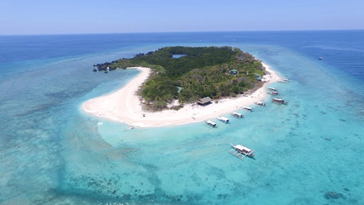
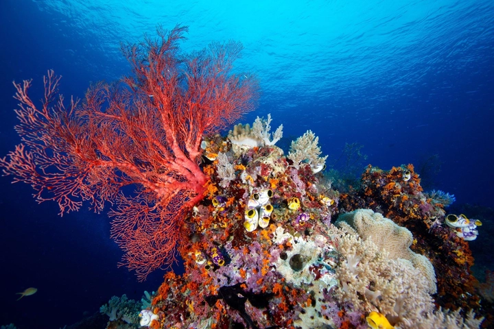
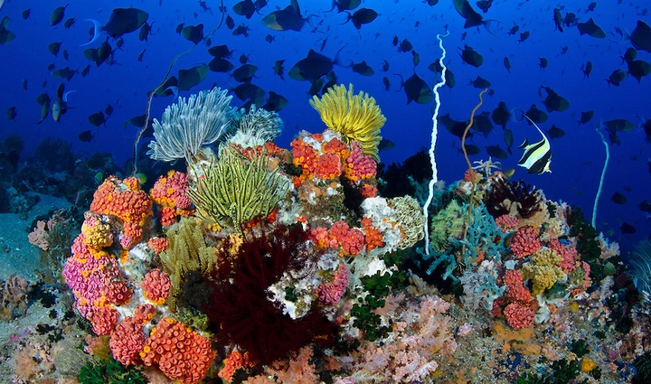
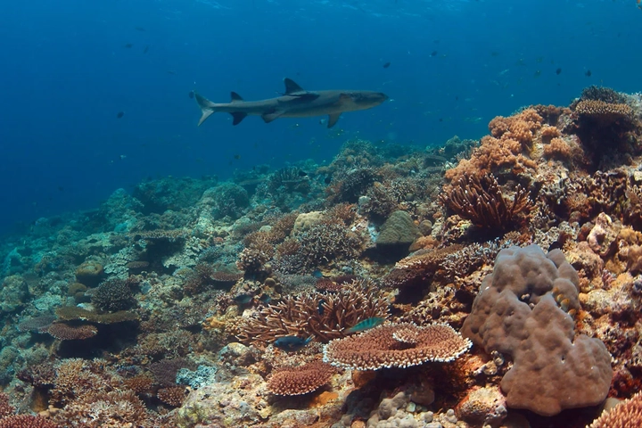
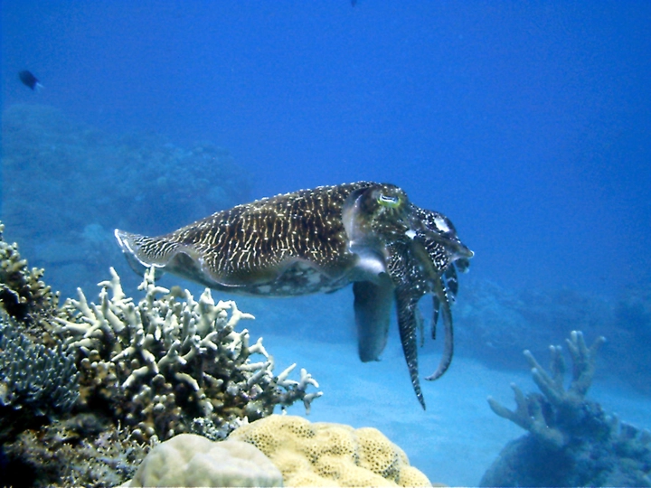
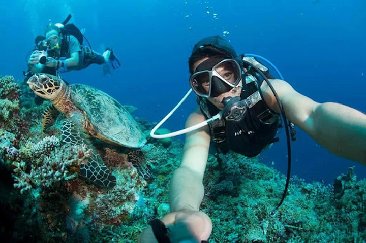
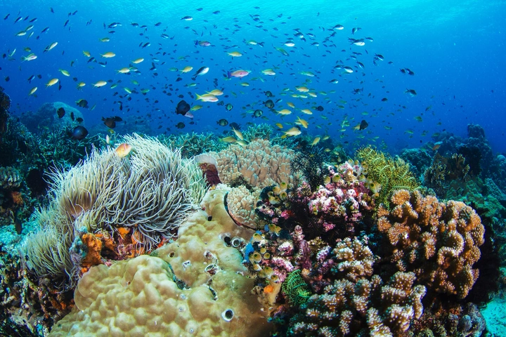

Khám phá rạn san hô Apo Reef (Philippines) – thiên đường dưới đáy đại dương
Ẩn mình giữa làn nước trong xanh của biển Tây Philippines, rạn san hô Apo Reef được xem là một trong những báu vật tự nhiên lớn nhất châu Á. Dù ít được biết đến, Apo Reef vẫn được cộng đồng khoa học và giới lặn biển đánh giá là một trong những hệ sinh thái san hô nguyên sơ và ngoạn mục nhất hành tinh.
Với vẻ đẹp hoang sơ, đa dạng sinh học phong phú cùng vai trò sinh thái to lớn, Apo Reef không chỉ là điểm đến hấp dẫn của du lịch lặn mà còn là minh chứng cho tầm quan trọng của việc bảo tồn biển trong bối cảnh biến đổi khí hậu toàn cầu.
Hôm nay hãy cùng TrithucWorld khám phá vẻ đẹp của rạn san hô Apo Reef - rạn san hô đơn lẻ lớn thứ hai thế giới.

1. Giới thiệu tổng quan về rạn san hô Apo Reef
Vị trí địa lý:
Rạn san hô Apo Reef nằm ở phía tây đảo Mindoro, thuộc tỉnh Occidental Mindoro của Philippines, giữa vùng biển rộng lớn của Biển Đông (South China Sea). Khu vực này nằm cách thủ đô Manila khoảng 150 km về phía nam, bao quanh bởi làn nước trong xanh và giàu sinh vật biển. Apo Reef là một phần của hệ thống biển Mindoro Strait, nơi giao thoa giữa dòng hải lưu từ Thái Bình Dương và biển Sulu, tạo điều kiện lý tưởng cho sự phát triển của các rạn san hô và sinh vật phù du – nền tảng của một hệ sinh thái biển trù phú.
Quy mô và đặc điểm:
Với tổng diện tích lên đến 34 km², Apo Reef không chỉ là rạn san hô lớn nhất của Philippines mà còn là rạn đơn lẻ lớn thứ hai thế giới, chỉ sau Great Barrier Reef của Úc nếu xét riêng từng cụm rạn. Hệ thống này bao gồm hai đảo nhỏ (Apo Island và Binangaan Island) cùng một rạn chính trải dài hàng chục kilômét dưới mặt nước. Cấu trúc của Apo Reef đặc biệt ở chỗ nó tạo thành một vòng san hô gần như khép kín, bao quanh một đầm phá trung tâm rộng hơn 20 km² với độ sâu trung bình khoảng 30 mét.

Bên trong đầm phá là vùng nước tĩnh, trong khi bên ngoài là nơi tập trung nhiều bờ vực dốc đứng, san hô rực rỡ và các dòng chảy mạnh – điều kiện lý tưởng cho các loài cá lớn, rùa biển và cá mập sinh sống. Nhờ đặc điểm địa hình độc đáo này, Apo Reef trở thành điểm lặn hàng đầu châu Á, thu hút các nhà nghiên cứu, nhiếp ảnh gia dưới nước và thợ lặn chuyên nghiệp từ khắp nơi trên thế giới.
Giá trị sinh thái và công nhận quốc tế:
Apo Reef được xem là trái tim của đa dạng sinh học biển Philippines. Nơi đây là mái nhà của hơn 385 loài cá, bao gồm nhiều loài có giá trị kinh tế và sinh thái cao như cá mú, cá hồng, cá hoàng đế. Bên cạnh đó, rạn còn chứa trên 500 loài san hô cứng và mềm, đại diện cho gần 75% tổng số loài san hô được ghi nhận trên toàn thế giới.
Apo Reef cũng là khu vực sinh sản và di trú quan trọng của nhiều loài sinh vật quý hiếm, trong đó có rùa xanh (Chelonia mydas), rùa hawksbill, cá đuối manta, và cá mập đầu búa (hammerhead shark). Các đàn cá heo và thậm chí cá voi xanh đôi khi cũng được ghi nhận xuất hiện quanh vùng rạn.
Với những giá trị nổi bật về sinh học và cảnh quan, Apo Reef đã được UNESCO công nhận là Di sản thiên nhiên dự kiến (Tentative World Heritage Site) – bước đầu trong lộ trình trở thành Di sản Thiên nhiên Thế giới chính thức. Ngoài ra, chính phủ Philippines đã thành lập Vườn Tự nhiên Biển Quốc gia Apo Reef (Apo Reef Natural Park) để bảo tồn và quản lý chặt chẽ khu vực này, hạn chế khai thác thương mại và khuyến khích du lịch sinh thái bền vững.
2. Hệ sinh thái và đa dạng sinh học dưới lòng biển Apo Reef
Ẩn mình giữa vùng biển xanh ngắt phía tây đảo Mindoro, Apo Reef được ví như một “vương quốc dưới nước” của Philippines – nơi hội tụ hàng trăm loài sinh vật biển cùng hệ sinh thái san hô rực rỡ hiếm có. Nhờ vào vị trí đặc biệt giữa các dòng hải lưu và điều kiện nước biển trong, nhiều ánh sáng, nơi đây trở thành môi trường lý tưởng cho san hô và các loài sinh vật biển phát triển mạnh mẽ.
Hệ sinh thái san hô phong phú:
Rạn san hô ở Apo Reef được xem là một trong những cấu trúc san hô nguyên sơ nhất châu Á, với hơn 500 loài san hô cứng và mềm, trải dài trên hàng chục kilômét. Màu sắc san hô biến đổi từ đỏ, tím, vàng đến xanh lam rực rỡ, tạo nên khung cảnh dưới nước sống động như một khu vườn nhiệt đới. Các loài san hô tạo thành lớp nền cho cả hệ sinh thái, là nơi trú ngụ, kiếm ăn và sinh sản của vô số loài cá và sinh vật biển nhỏ.

Thế giới cá và sinh vật biển đa dạng:
Dưới làn nước trong vắt có thể nhìn sâu đến 30 mét, thợ lặn dễ dàng bắt gặp những đàn cá hề (clownfish), cá bướm (butterflyfish) hay cá thiên thần (angelfish) lượn quanh san hô. Những loài lớn hơn như cá mú khổng lồ, cá hoàng đế, cá barracuda, và cá ngừ vằn cũng thường xuyên xuất hiện tại vùng rìa ngoài rạn.

Đặc biệt, Apo Reef còn là nơi sinh sống của các loài sinh vật quý hiếm như rùa xanh, rùa hawksbill, cá mập đầu búa (hammerhead shark), cá mập trắng vây đen, và cá đuối manta với sải cánh khổng lồ. Nhiều thợ lặn đã mô tả trải nghiệm tại Apo Reef như “được lạc vào đại dương nguyên thủy”, nơi con người chỉ là vị khách nhỏ bé giữa thiên nhiên hùng vĩ.
Khu vực đầm phá – trái tim của Apo Reef:
Trung tâm của hệ thống là đầm phá rộng hơn 20 km², nơi nước lặng và ít dòng chảy, tạo môi trường lý tưởng cho các loài san hô non phát triển. Đây cũng là nơi sinh sản và ẩn náu của nhiều loài cá con, mực và giáp xác nhỏ – nguồn thức ăn chính của các loài lớn hơn bên ngoài rạn. Hệ sinh thái ở đầm phá đóng vai trò quan trọng trong việc duy trì cân bằng sinh học cho toàn khu vực.
Các loài chim và sinh vật trên cạn:
Không chỉ dưới nước, các đảo nhỏ thuộc Apo Reef như Apo Island và Binangaan Island cũng là nơi sinh sống của nhiều loài chim di cư và sinh vật ven biển. Trong mùa sinh sản, hàng trăm con chim biển bay về làm tổ trên các bãi cát trắng, tạo nên khung cảnh sinh động hiếm có.
Giá trị khoa học và bảo tồn:
Các nhà nghiên cứu biển quốc tế đánh giá Apo Reef là “phòng thí nghiệm tự nhiên” quan trọng để theo dõi sự biến đổi của đại dương và tác động của biến đổi khí hậu đến hệ sinh thái san hô. Dữ liệu thu thập tại đây giúp các nhà khoa học hiểu rõ hơn về quá trình phục hồi tự nhiên của rạn san hô sau khi bị ảnh hưởng bởi nhiệt độ nước biển tăng cao.

Nhờ giá trị sinh học đặc biệt, Apo Reef đã trở thành trung tâm nghiên cứu và bảo tồn biển hàng đầu của Philippines, đồng thời là biểu tượng cho nỗ lực bảo vệ đại dương bền vững của khu vực Đông Nam Á.
3. Du lịch và hoạt động khám phá tại rạn san hô Apo Reef
Không chỉ là thiên đường của các nhà khoa học biển, Apo Reef còn được xem là điểm đến mơ ước của giới thợ lặn quốc tế – nơi mà mỗi mét nước đều mở ra một thế giới kỳ diệu đầy màu sắc. Dù nằm ở vị trí khá xa đất liền, việc khám phá rạn san hô này mang lại trải nghiệm độc đáo, vừa thách thức vừa đầy cảm hứng đối với những ai yêu biển và muốn tìm đến vẻ đẹp nguyên sơ hiếm có.
Hành trình đến Apo Reef
Để đến được Apo Reef, du khách thường xuất phát từ thị trấn Sablayan (tỉnh Occidental Mindoro), nơi có các chuyến thuyền đưa khách ra rạn. Quãng đường di chuyển khoảng 2–3 giờ bằng thuyền, và du khách cần đăng ký trước với Ban quản lý Vườn tự nhiên Apo Reef vì số lượng người được phép vào mỗi ngày bị giới hạn để bảo vệ môi trường sinh thái.
Trải nghiệm lặn biển
Apo Reef được mệnh danh là “thiên đường lặn của Philippines”, sánh ngang với Tubbataha Reefs và Coron Bay. Với độ trong của nước lên tới 30 mét, nơi đây cho phép người lặn ngắm nhìn rõ từng cụm san hô, từng đàn cá tung tăng trong làn nước xanh thẳm.

Một số điểm lặn nổi tiếng gồm:
-
Shark Ridge – nơi thường xuất hiện cá mập đầu búa và cá mập trắng vây đen.
-
Channel Drift Dive – khu vực có dòng chảy nhẹ, lý tưởng cho lặn trôi (drift diving), nơi có thể bắt gặp rùa biển và cá đuối manta.
-
The Wall – bức tường san hô dốc đứng với hàng nghìn loài cá nhỏ và san hô quạt khổng lồ.
Ngoài ra, những ai chưa có kinh nghiệm lặn bình khí vẫn có thể snorkeling (lặn ống thở) ở vùng nước nông gần đảo Apo – nơi có san hô rực rỡ và đàn cá nhiệt đới bơi lội chỉ cách mặt nước vài mét.
Lặn đêm – Trải nghiệm kỳ diệu dưới ánh trăng
Một trong những hoạt động đặc sắc nhất tại Apo Reef là lặn đêm (night diving). Khi ánh sáng mặt trời tắt dần, cả thế giới dưới nước như được “thay ca” – các loài sinh vật ban ngày ẩn mình, nhường chỗ cho mực ống, tôm, cua và san hô dạ quang tỏa sáng. Cảnh tượng ấy khiến nhiều thợ lặn mô tả đây là “một bữa tiệc ánh sáng sinh học” hiếm có trong đời.
Du lịch sinh thái và bảo tồn
Không giống nhiều khu du lịch biển khác, Apo Reef được quản lý chặt chẽ để bảo đảm phát triển bền vững. Chính quyền địa phương cùng các tổ chức môi trường quốc tế như WWF Philippines đã triển khai nhiều chương trình bảo tồn, trong đó có:
-
Giới hạn số lượng du khách và tàu vào rạn mỗi ngày.
-
Cấm hoàn toàn việc chạm, bẻ hoặc mang san hô, sinh vật biển ra khỏi khu vực.
-
Khuyến khích du lịch “không rác thải” – du khách phải mang rác trở lại đất liền.
-
Tổ chức các chương trình giáo dục môi trường và dọn rác đáy biển định kỳ.
Nhờ những chính sách bảo vệ nghiêm ngặt, Apo Reef vẫn giữ được trạng thái gần như nguyên sơ, là một trong số ít rạn san hô lớn trên thế giới chưa bị tẩy trắng nghiêm trọng do biến đổi khí hậu.
Nơi con người hòa mình cùng thiên nhiên
Ngoài các hoạt động lặn, du khách có thể cắm trại qua đêm trên đảo Apo Island, ngắm bình minh trên biển Mindoro, hoặc leo lên ngọn hải đăng Apo Lighthouse để thu trọn khung cảnh đại dương bao la. Đêm đến, bầu trời phủ đầy sao, tiếng sóng vỗ nhẹ vào bờ san hô tạo nên cảm giác tĩnh lặng hiếm có — một khoảnh khắc để con người thật sự cảm nhận sự nhỏ bé của mình trước thiên nhiên hùng vĩ.
4. Thách thức và định hướng bảo tồn trong tương lai
Dù sở hữu vẻ đẹp tự nhiên hiếm có, Apo Reef vẫn đang phải đối mặt với nhiều thách thức môi trường nghiêm trọng. Biến đổi khí hậu khiến nhiệt độ nước biển tăng cao, gây ra hiện tượng tẩy trắng san hô (coral bleaching); ô nhiễm nhựa từ đất liền và hoạt động du lịch là mối đe dọa trực tiếp đến sinh vật biển; trong khi đó, nạn đánh bắt cá trái phép bằng chất nổ hoặc lưới mịn vẫn thỉnh thoảng xảy ra ở các khu vực giáp ranh.

Trước những nguy cơ ấy, chính phủ Philippines đã đặt ra chiến lược bảo tồn dài hạn, tập trung vào ba hướng chính:
-
Giáo dục cộng đồng ngư dân về tầm quan trọng của hệ sinh thái san hô, khuyến khích họ tham gia các hoạt động bảo tồn thay vì khai thác cạn kiệt.
-
Phát triển du lịch sinh thái bền vững, cân bằng giữa khai thác kinh tế và bảo vệ môi trường biển.
-
Đẩy mạnh nghiên cứu tái sinh san hô, sử dụng công nghệ cấy ghép và phục hồi tự nhiên dưới sự hỗ trợ của các tổ chức khoa học quốc tế.
Mục tiêu lâu dài là đưa Apo Reef trở thành Di sản thiên nhiên thế giới được UNESCO công nhận chính thức, qua đó tăng cường bảo vệ và thu hút nguồn lực quốc tế cho công tác gìn giữ. Nếu thành công, Apo Reef không chỉ là niềm tự hào của Philippines mà còn là biểu tượng của nỗ lực toàn cầu trong việc bảo vệ đại dương và đa dạng sinh học cho thế hệ tương lai.
Kết luận: Apo Reef – Viên ngọc xanh giữa đại dương cần được bảo vệ
Từ góc nhìn sinh thái lẫn du lịch, Apo Reef không chỉ là một rạn san hô lớn nhất Philippines mà còn là biểu tượng cho vẻ đẹp nguyên sơ và sức sống mãnh liệt của đại dương. Nơi đây chứa đựng hàng trăm loài sinh vật biển quý hiếm, những rặng san hô nhiều màu sắc, cùng môi trường biển trong lành hiếm có – tất cả hòa quyện tạo nên một bức tranh thiên nhiên sống động và tràn đầy năng lượng.
Tuy nhiên, trước sức ép ngày càng lớn từ biến đổi khí hậu, ô nhiễm rác thải và khai thác quá mức, vẻ đẹp ấy đang đứng trước nguy cơ bị tổn thương. Chính vì vậy, Apo Reef không chỉ cần được ngắm nhìn mà còn cần được bảo vệ bằng hành động thực tế – từ việc hạn chế du lịch đại trà, nâng cao ý thức du khách, đến hỗ trợ các chương trình nghiên cứu và phục hồi san hô.
Với sự chung tay của chính phủ, cộng đồng địa phương và các tổ chức quốc tế, Apo Reef có thể trở thành hình mẫu cho bảo tồn biển bền vững ở châu Á, đồng thời là ứng cử viên sáng giá cho danh hiệu Di sản thiên nhiên thế giới. Bảo vệ Apo Reef hôm nay cũng chính là gìn giữ hơi thở của đại dương cho mai sau, để thế hệ tương lai vẫn còn được chứng kiến kỳ quan thiên nhiên tuyệt đẹp này trong hình hài nguyên vẹn nhất.